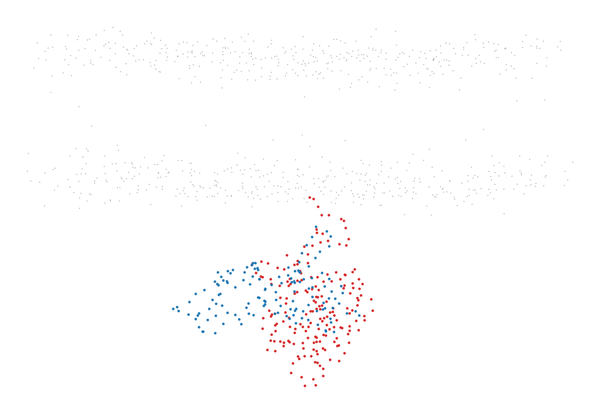

📝 ras-raf-membrane
38/65 (58.5%)
📋 Task Description
1. Please load the Martini coarse-grained simulation file from "ras-raf-membrane/data/ras-raf-membrane.gro" into VMD. The simulations has a membrane and a RAS-RAF protein complex.
2. Use VMD to show a zoomed in side view of the membrane and center on the protein with the protein below the membrane.
For the bilayer only show the PO4 lipids beads and ROH cholesterol bead and color them gray.
Also show the protein back bone beads coloring RAS (resid 2 to 187) red and RAF (resid 188 to 329) blue.
Take a screenshot of the visualization.
3. Analyze the visualization and answer the following questions:
Q1: Are there any cholesterol head groups in the bilayer center? (yes/no)
Q2: How many lipids are there within 1.5 nm of the RAF protein?
A. 0
B. 0-3
C. 3-5
D. >5
4. Save your work:
Save the VMD state as "ras-raf-membrane/results/{agent_mode}/ras-raf-membrane.vmd".
Save the screenshot of the visualization as "ras-raf-membrane/results/{agent_mode}/ras-raf-membrane.png".
Save the answers to the analysis questions in plain text as "ras-raf-membrane/results/{agent_mode}/answers.txt".
🖼️ Visualization Comparison
Ground Truth

Agent Result

Image not available📏 Vision Evaluation Rubrics
📝 Text-Based Q&A Evaluation
📊 Detailed Metrics
Visualization Quality
21/30
Output Generation
5/5
Efficiency
2/10
Text Q&A Score
10/20
50.0%
Input Tokens
543,882
Output Tokens
10,083
Total Tokens
553,965
Total Cost
$1.0930